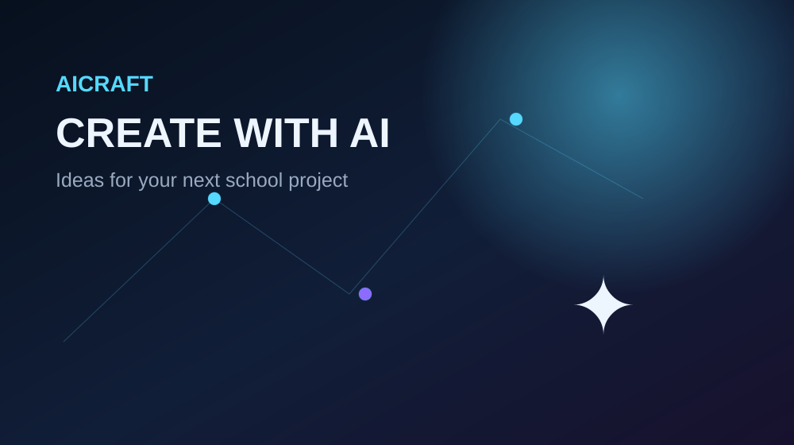

01BEGINNER
Smart FAQ Bot
Create a webpage that answers a fixed collection of questions using JavaScript. Add categories and a search box.
Use these ideas as starting points for a Class 10 project. Keep the scope small and explain your method clearly.

Create a webpage that answers a fixed collection of questions using JavaScript. Add categories and a search box.
Build a quiz that teaches users about AI applications, benefits, limitations and responsible use.
Use sample data to demonstrate how a recommendation system can match items to a user's interests.